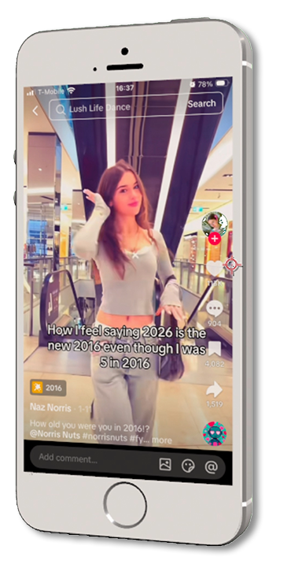
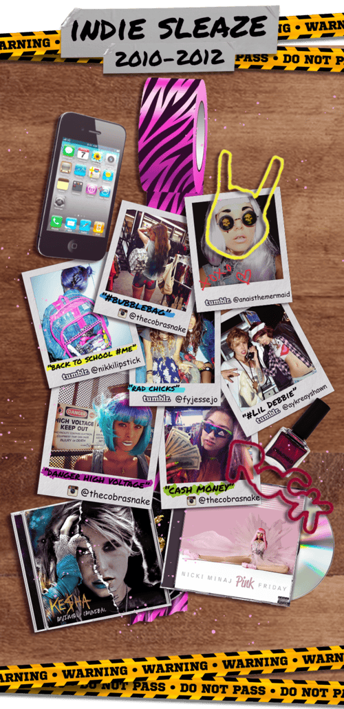
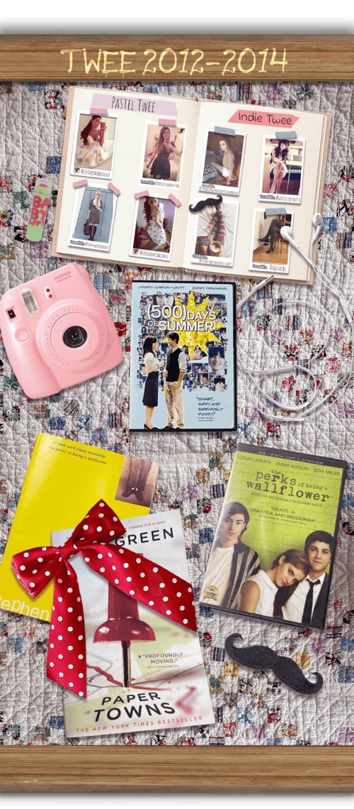
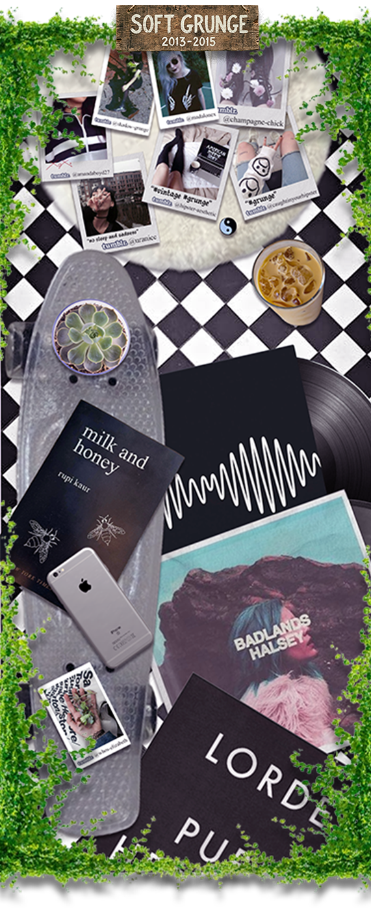
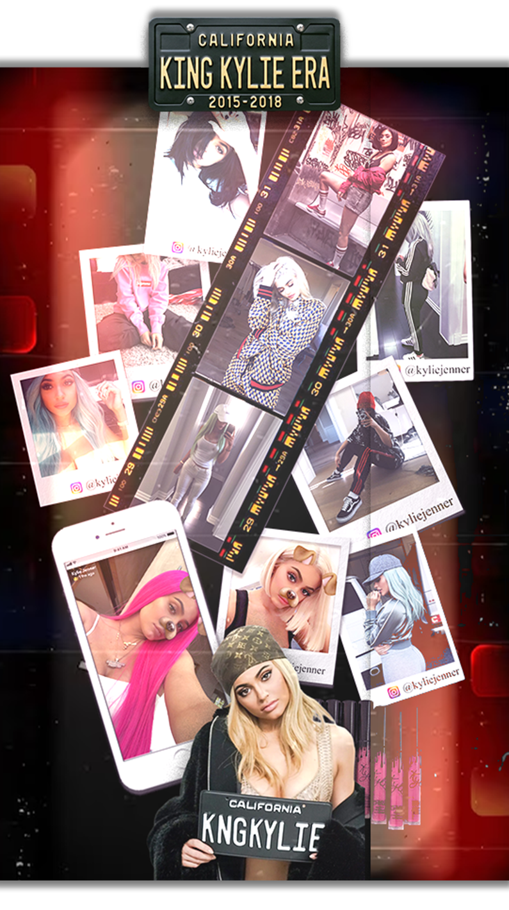
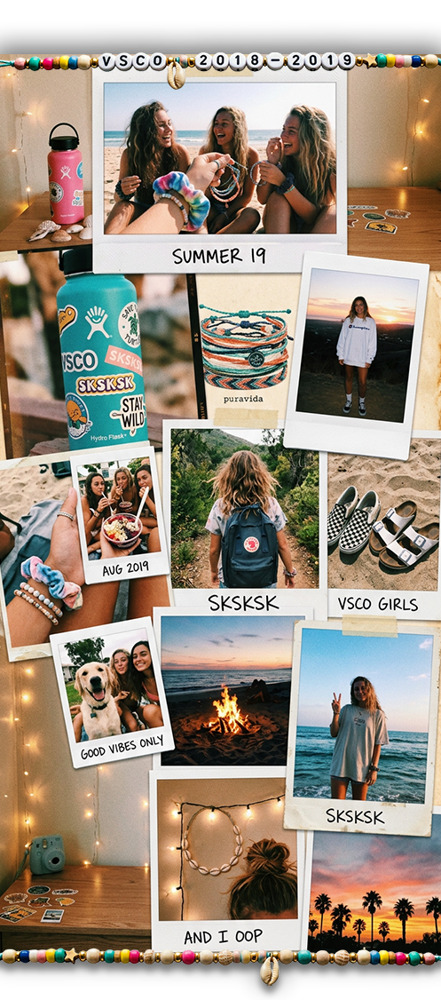

Source: @naznorris.2010_ on TikTok
Do you ever wish you could go back to the 2010s? You're not alone. More than ever, young adults are feeling nostalgic for a decade they didn't fully live through — and for good reason. With online trends declaring that "2026 is the new 2016," the 2010s have shed their status as recent history and transformed into something bigger: a full-blown aesthetic era defined by optimism and self-expression.
Platforms like Tumblr, Instagram, and Pinterest were the engines of that era, giving people the tools to craft and broadcast their styles to the world. But as Gen Z rediscovers and reimagines 2010s aesthetics, many millennials have pushed back, arguing that the aesthetics are being misrepresented. The nuance is getting lost.
That's where Tumblr Times comes in. Whether you're a young adult curious about the aesthetics that shaped a generation, or a millennial ready to relive some golden-era nostalgia, this is your space. Tumblr Times is here to guide you through exploring the five defining aesthetics of the 2010s — Indie Sleaze, Twee, Soft Grunge, King Kylie, and VSCO — through our Time Machine where you can spend a day in the 2010's and play our Trivia game to put your 2010's knowledge to the test.

Source: Rachel MacMillan
Indie Sleaze was equal parts chaos and charisma. This was the aesthetic of girls with teal-dyed hair, neon backpacks, and smudged liner who documented everything on disposable cameras and early Instagram before anyone knew what a "personal brand" was. The Cobrasnake was shooting it. Tumblr was reblogging it. And nobody was asking for permission.
The look was loud and intentionally unpolished: fishnet tights layered under denim cutoffs, vintage band tees knotted at the waist, plastic sunglasses, and accessories piled on without apology. Zebra print. Neon. Anything that looked like it came from a thrift store, a rave, or both. The iPhone 4 was the camera of the era — grainy, slightly blown-out photos that made even the most ordinary Tuesday feel like the night of your life.
Musically, the scene spanned a chaotic and glorious range. Ke$ha's Animal set the tone: glittery, reckless, and completely unserious in the best way. Nicki Minaj's Pink Friday brought maximalist fantasy. Crystal Castles and Sleigh Bells provided the abrasive, distorted soundtrack for warehouse shows and basement parties. These weren't just artists but were aesthetic anchors.
This was the last era before everything got curated. Before grids. Before filters had to be consistent. Tumblr accounts like @thecobrasnake captured real nights of real people fanning out dollar bills, dancing under "DANGER HIGH VOLTAGE" signs, and looking effortlessly unhinged in the process. The messiness wasn't a flaw in the documentation; it was the whole point.
Indie Sleaze wasn't an aesthetic you assembled, but was one you lived, photographed badly, and posted anyway.

Source: Rachel MacMillan
The Twee aesthetic from 2012-2014 takes inspiration from 1950's - 1970's fashion, highlighting primary colors and traditional patterns such as polka dots, stripes, and herringbone. Being inspired by older styles, Twee fashion is generally considered more conservative. Common Twee attire includes circle-skirt dresses, blouses with the Peter Pan collar, cat eye sunglasses, patterned tights (regardless of the weather), bows, and dress shoes such as ballet flats, kitten heels or pumps, or Mary Janes.
The idea behind the aesthetic is to look polished but playful, which is often fulfilled through revamping the conservative style with fun patterns, such as animal patterns (cat and owl patterns were popular at the time) or floral and paisley patterns. The main appeal to the Twee aesthetic was quirkiness, shown through a person's preference for outdated or vintage clothing styles, collectibles, or technology. This aesthetic is often mascotted and taken inspiration from Zooey Deschanel, the main character in the series New Girl.
There are also different subgenres of Twee, one most notable being Pastel Twee, which followed the conservative clothing style but with a pastel color palette and seemingly 'cute' patterns such as desserts like cupcakes or macarons. Ariana Grande at this time is considered the face of Pastel Twee as at this time, she was transitioning from her career as a childhood Nickelodeon star to releasing her first two albums. She wore a lot of traditional circle-skirt dresses with macaroon patterns, polka dots, kitten heels, tights, and pink cat eye sunglasses.
Both the Indie (Traditional) Twee and Pastel Twee aesthetics illustrate a notion of optimism and curiosity, with themes often centering around coming of age or nostalgia. Popular films considered Twee are usually indie films that illustrate a notion of optimism and curiosity, with themes often centering around coming of age or nostalgia.

Source: Rachel MacMillan
The Soft Grunge aesthetic emerged primarily through Tumblr blogs in 2013-2015. Drawing inspiration from 90s grunge and revamping it through a softer, more minimalist lens, the Soft Grunge aesthetic was built around a primarily black and white color palette accented with cool pastels and denim. Soft Grunge combines highly curated aspects from the emo, alternative, and indie aesthetics with an intention of serenity with an undertone of melancholy.
The aesthetic highly romanticizes sadness and loneliness while simultaneously upholding a culture of exclusivity and requiring followers to look the aesthetic part. Minimalism was expressed through carrying a caseless phone, wearing the black and white uniform, and curating the aesthetically pleasing space.
Music was a fundamental aspect of the aesthetic, with most artists categorized in the indie and indie pop genres. Classic Soft Grunge outfits often include flannels, black skinny jeans (often ripped), pleated skirts, fishnets, black and white Converse, Doc. Martens, creepers, chokers, and beanies. Soft Grunge Tumblr blogs often reference inspiration from psychological dramas such as American Horror Story, Skins (UK), The Virgin Suicides, and Girl, Interrupted.

Source: Rachel MacMillan
The King Kylie aesthetic emerged in 2015, a fashion era defined by Kylie Jenner in her later teenage years. The aesthetic was a bridge between casual street wear and gaudy luxury fashion, taking slight influence from the Soft Grunge Tumblr aesthetic. Makeup and hair were central to this aesthetic, as the all out glam makeup and bright wigs juxtaposed the streetwear fashion.
The aesthetic highlights dark femininity and rebelliousness, reflections that parallel with the changing online culture at the time. The King Kylie era was when users started using Instagram and Snapchat as primary platforms for self-expression, moving away from the anonymity of Tumblr toward a more personal, face-forward kind of celebrity culture. Kylie herself pioneered this shift, building her brand through candid Snapchat stories and Instagram posts that made her feel simultaneously aspirational and accessible.
Common King Kylie attire included crop tops, bodycon skirts or ripped skinny jeans, oversized designer hoodies, thigh-high boots, and coordinating two-piece sets, all styled with an air of casual indifference. The color palette leaned dark and moody: lots of black, deep burgundy, and navy, occasionally punctuated by the bold, electric hues of her rotating wig collection, which became one of her most iconic signatures. Lips were defining, reflecting the infamous lip kit empire Kylie would launch in late 2015, with an emphasis on overlined, deep matte shades.
The overall effect was high-maintenance glamour dressed down in streetwear. Luxury brands like Balmain or Yeezy were mixed with simple bodysuits and sneakers, making opulence feel nonchalant. The King Kylie aesthetic captured a specific cultural moment of young women owning their sexuality and image on their own terms, and it laid the groundwork for the influencer-driven beauty and fashion industry that would fully take shape in the years to follow.

Source: AI Generated with Adobe Firefly
The VSCO aesthetic, which peaked in popularity around 2018-2020, takes inspiration from West Coast outdoor and surf culture, highlighting warm, sun-bleached tones and a relaxed, nature-forward sensibility. Being rooted in coastal and Pacific Northwest lifestyles, VSCO fashion is generally considered casual and effortless. Common VSCO attire includes oversized graphic tees, mom jeans or bike shorts, Birkenstocks or Nike slides, scrunchies worn on the wrist, and layered friendship bracelets such as Pura Vida bands. The idea behind the aesthetic is to look put-together without appearing to try, which is often achieved through simple, comfortable staples elevated by signature accessories — most notably the Hydro Flask water bottle, which became something of a badge of the aesthetic. Photography is central to the VSCO identity, with its signature editing style favoring faded highlights, warm or muted tones, and a film-like quality that makes everyday moments feel softly nostalgic.
The aesthetic is also tied to a quiet environmentalism, expressed through reusable bags, metal straws, and a general ethos of conscious, simple living. The main appeal of VSCO was its sense of effortless cool — the idea that beauty comes from being relaxed, natural, and unbothered. There are notable subgenres within VSCO, the most distinct being Dark VSCO or VSCO-meets-cottagecore, which traded the beachy palette for moody forest greens, flannel, and an earthier, more introverted outdoor spirit. Both the classic and darker variations of the VSCO aesthetic share a deep sense of wanderlust and a romanticization of the natural world, with mood boards often centering around open roads, quiet lakesides, golden hour skies, and the feeling of a summer that never quite has to end.